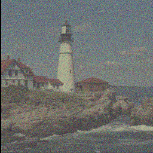

I'm a Research Fellow at the
Center for Computational Mathematics
of the
Flatiron Institute
in New York, and member the of
Polymathic AI
collaboration. I received my Ph.D. in Computer Science from the Physics Lab of Ecole Normale Supérieure in 2022, and was a research scientist for the startup LightOn where I worked on developing new machine learning algorithms and applications (adversarial robustness, differential privacy, time-series prediction...) for Optical Processing Units.
During my PhD, I interned at the Criteo AI Lab.
My research currently focuses on building foundation models for scientific data (mostly numerical simulations of partial differential equations and astrophysics data), as well as dataset building and on training large deep learning models, as part of the Polymathic AI collaboration.
Before my Ph.D., I graduated with an engineering degree from ESPCI Paris, an MSc in Condensed Matter from Ecole Normale Supérieure, and an MSc in Statistics from Sorbonne University. During these undergraduate studies, I interned at NTT Basic Research Laboratory in Japan, the LIGO at M.I.T. and the Quantum Information Group at the LIP6 at Sorbonne University.
You can find more information about me here: CV -
Google Scholar -
-
-
Research
The Well: a large-scale collection of physics numerical simulations for machine learning
We will soon release one of the most extensive collection of scientific datasets, which comprises numerical simulations of diverse physics phenomena ranging from biology to astrophysics. We hope it will advance both the developement of ML surrogate models, accelerate scientific discovery, and allow the training of foundation models.

Blind denoising using Gibbs-Diffusion.
We developed a very cool blind denoising algorithm for natural images, with an application in astrophysics. It can at the same time do parameter inference with uncertainties. We believe it has the potential to be applied in many different scientific fields. The project was accepted at ICML 2024 and the code can be found
here.

Publications
The Well: a Large-Scale Collection of Diverse Physics Simulations for Machine Learning. R. Ohana and M.McCabe, Polymathic AI.
NeurIPS 2024 D&B track.
-
Multiple Physics Pretraining for Physical Surrogate Models. Polymathic AI.
NeurIPS 2024.
-
Listening to the Noise: Blind Denoising with Gibbs Diffusion D. Heurtel-Depeiges, C. Margossian, R. Ohana, B. Régaldo.
ICML 2024
- MoMo: Momentum Models for Adaptive Learning Rates. F. Schaipp, R. Ohana, M. Eickenberg, A. Defazio, R. M. Gower. ICML 2024
-
xVal: A Continuous Number Encoding for Large Language Models. Polymathic AI.
NeurIPS, AI4Science Workshop 2023.
- Removing Dust from CMB Observations with Diffusion Models. D. Heurtel-Depeiges, B. Burkhart, R. Ohana, B. Régaldo-Saint Blancard. Oral @ NeurIPS, MLPS Workshop 2023.
- AstroCLIP: Cross-Modal Pre-Training for Astronomical Foundation Models. Polymathic AI. NeurIPS, AI4Science Workshop 2023.
- Shedding a PAC-Bayesian Light on Adaptive Sliced-Wasserstein Distances. R. Ohana*, K. Nadjahi*, A. Rakotomamonjy, L. Ralaivola. ICML 2023
- Linear Optical Random Projections Without Holography. R. Ohana, D. Hesslow, D. Brunner, S. Gigan, K. Müller. Optics Express
- Complex-to-Real Random Features for Polynomial Kernels. J. Wacker, R. Ohana, M. Filippone. AISTATS 2023
- Photonic Differential Privacy with Direct Feedback Alignment. R. Ohana*, H.J. Ruiz*, J. Launay*, A. Cappelli, I. Poli, L. Ralaivola, A. Rakotomamonjy. NeurIPS 2021
- ROPUST: Improving Robustness through Fine-tuning with Photonic Processors and Synthetic Gradients. A. Cappelli, J. Launay, L. Meunier, R. Ohana, I. Poli. arXiv
- Adversarial Robustness by Design through Analog Computing and Synthetic Gradients. R. Ohana*, A. Cappelli*, J. Launay, L. Meunier, I. Poli, F. Krzakala. ICASSP 2022
- Photonic co-processors in HPC: using LightOn OPUs for Randomized Numerical Linear Algebra. D. Hesslow, A. Cappelli, I. Carron, L. Daudet, R. Lafargue, K. Müller, R. Ohana, G. Pariente, I. Poli. Hot Chips 2021
- The dynamics of learning with feedback alignment. M. Refinetti*, S. d'Ascoli*, R. Ohana, S. Goldt. ICML 2021
- Reservoir Computing meets Recurrent Kernels and Structured Transforms. R. Ohana*, J. Dong*, M. Rafayelyan, F. Krzakala. Oral @ NeurIPS 2020
- Experimental Approach to Demonstrating Contextuality for Qudits. A. Sohbi, R. Ohana, I. Zaquine, E. Diamanti, D. Markham. Physical Review A
- Kernel Computations from large-scale random features obtained by Optical Processing Units. R. Ohana, J. Wacker, J. Dong, S. Marmin, F. Krzakala, M. Filippone, L. Daudet. ICASSP 2020
- Impact of epitaxial strain on the topological-nontopological phase diagram and semimetallic behavior of InAs/GaSb composite quantum wells. H. Irie, T. Akiho, F. Couedo, R. Ohana, S. Suzuki, H. Onomitsu, K. Muraki. Physical Review B
Patent
- Method and System for machine learning using optical data. I. Poli, J. Launay, K. Müller, G. Pariente, I. Carron, L. Daudet, R. Ohana, D. Hesslow. US Patent
PhD Manuscript
- Leveraging (physical) randomness in machine learning algorithms. R. Ohana. PhD Thesis
Miscellaneous
- Reviewer for NeurIPS 2021-2024, ICML 2022-2024, ICLR 2023, ALT 2020, WACV 2022, Nature Communications, Journal of Machine Learning Research (JMLR).